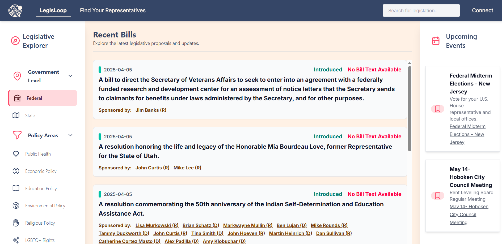
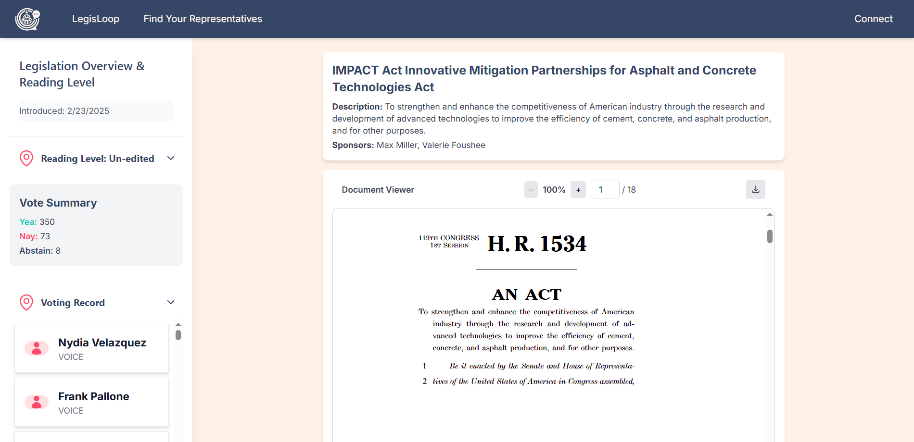
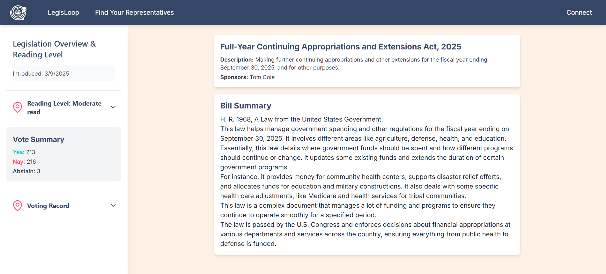
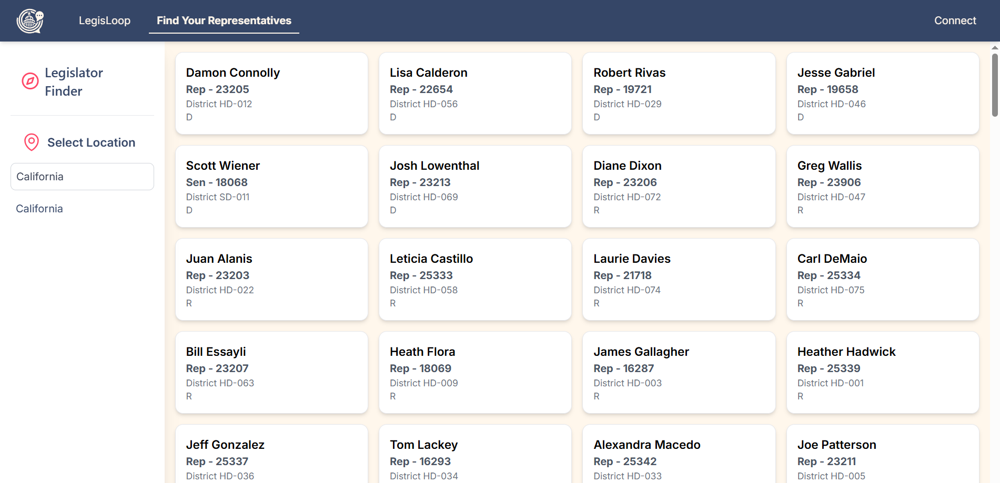
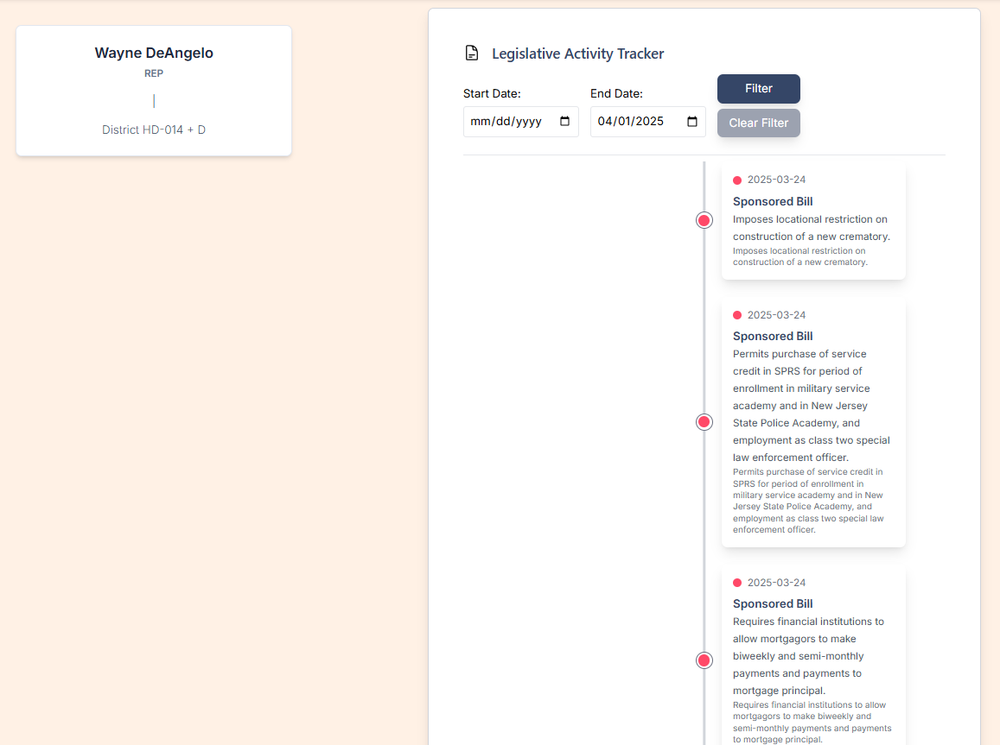

A year online, now preserved in place
A memior to LegisLoop.
LegisLoop began as a way to make legislation easier to explore, understand, and follow. After a year of running the full service, the live application was retired because the ongoing server costs were too high to maintain. This static site keeps the project and its final writeup accessible.
Our Purpose
Why LegisLoop was built
LegisLoop was designed as a central place for people to follow public issues that affect their communities without having to sort through scattered government pages, confusing bill text, or highly polarized social platforms.
Mission And Approach
Accessible, reliable civic information
The project aimed to make legislation and public action easier to understand, easier to find, and easier to act on. The core idea was simple: give citizens a more efficient and trustworthy way to learn what government is doing, understand what proposed policy may actually mean, and connect that information to practical civic engagement.
That focus came from a few clear problems. Public trust in government is low, much of the legislative process is hard to follow unless someone already knows where to look, and many people only engage during major national elections. Even when a bill is easy to locate, it is often still difficult to tell what it does or how it could affect everyday life.
LegisLoop was also shaped by a set of constraints. The platform was meant to rely on government-based or independently verified information, remain politically neutral, avoid manipulative or persuasive use, and stay accessible to a broad range of users. In practice, that meant prioritizing clarity, source quality, privacy, and usability over speed, noise, or engagement tactics.
Screenshot Showcase
The original experience
These preserved snapshots captures the dashboard-style layout LegisLoop used to surface recent bills, policy filters, and upcoming civic events.





Project Record
The final writeup and lasting context
The full report documents the goals, architecture, and thinking behind LegisLoop.
Featured document
LegisLoop Project Paper
Final project writeup for LegisLoop, preserved as part of the archived site.